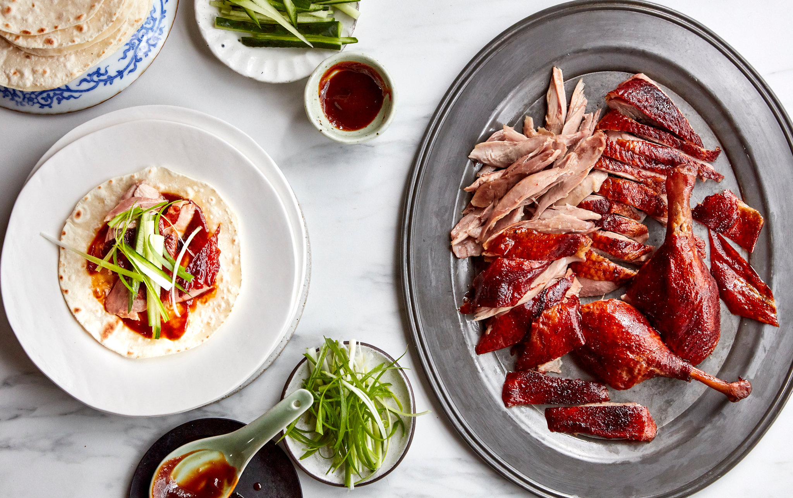

Peking Duck
Home

Description
The flavor of this Peking duck is delicious thanks to an easy spice rub.
The roast duck can be served with plum sauce or other fruit sauce. This
recipe is a short-cut version, but it is fantastic!
Ingredients
- 1 (4 pound) whole duck, dressed
- ½ teaspoon ground cinnamon
- ½ teaspoon ground ginger
- ¼ teaspoon ground nutmeg
- ¼ teaspoon ground white pepper
- ⅛ teaspoon ground cloves
- 3 tablespoons soy sauce, divided
- 1 tablespoon honey
- 5 green onions, divided
- ½ cup plum jam
- ¼ cup finely chopped chutney
- 1 ½ teaspoons sugar
- 1 ½ teaspoons distilled white vinegar
- 1 orange, sliced in rounds
- 1 tablespoon chopped fresh parsley, for garnish
Steps
- Gather all ingredients.
- Rinse duck inside and out; pat dry. Cut off tail and discard.
-
Mix cinnamon, ginger, nutmeg, white pepper, and cloves together in a
small bowl. Sprinkle 1 teaspoon of spice mix into cavity of duck.
-
Stir 1 tablespoon soy sauce into remaining spice mix and rub evenly over
entire outside of duck.
- Cut 1 green onion in half and tuck it inside cavity.
-
Cover and refrigerate duck for at least 2 hours or up to overnight.
-
Place duck breast-side up on a rack set in a wok or pot. Steam for 1
hour, adding more water as it evaporates.
- Lift duck with two large spoons to drain juices and green onion.
-
Preheat the oven to 375 degrees F (190 degrees C). Place duck
breast-side up in a roasting pan and prick skin all over with a fork.
- Roast duck in the preheated oven for 30 minutes.
-
Mix together remaining 2 tablespoons soy sauce and honey in a small
bowl. Brush honey mixture onto duck.
-
Increase the oven temperature to 500 degrees F (260 degrees C). Roast
until skin is richly browned, about 5 minutes. Do not allow skin to
char.
-
Mix plum jam, chutney, sugar, and vinegar in a small serving bowl. Chop
remaining green onions and place them into a separate bowl.
-
Place whole duck onto a serving platter and garnish with orange slices
and fresh parsley. Serve with plum sauce and chopped green onions.